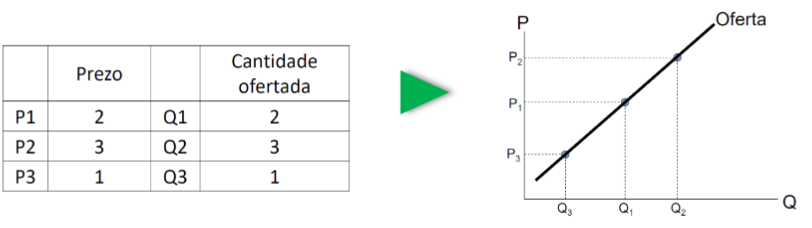
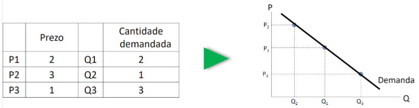

XEFE · curso 2
1. Introducción a la actividad económica y empresarial
Nota
Lo importante de este tema no es nada concreto, solo hace preguntas tipo test en el final
1.1 La actividad económica y las empresas
Actividad económica: es una ciencia social que consiste en asignar recursos limitados a necesidades ilimitadas. Por ejemplo si necesitas 30 PCs y no tienes suficiente dinero para permitírtelo.
Oferta: cantidad de bienes o servicios que los productores ponen a la venta. Demanda: cantidad de bienes o servicios que los consumidores quieren adquirir. Ley de la Oferta y la Demanda: principio básico sobre el que se basa una economía de mercado que refleja la relación entre la demanda de un producto y la cantidad ofrecida de dicho producto teniendo en cuenta su precio.
- Cuando para un precio P, la demanda D supera a la oferta O, P tiende a aumentar.
- Cuando para un precio P, la oferta O supera a la demanda D, P tiende a disminuir.
Ley de la Oferta: un aumento en el precio tiende a aumentar la oferta (ya que cuento mayor sea el precio de un producto más comerciantes lo querrán vender debido al beneficio que les supone) y un descenso del precio tiene a disminuirla. La gráfica suele ser una curva.

Ley de la Demanda: un aumento en el precio tiende a disminuir la demanda (ya que menos consumidores estarán dispuesto a comprar el producto por un valor alto), mientras que un descenso en el precio la aumenta.

El precio tiene al nivel en el que la oferta es igual que la demanda. Este punto de equilibrio no es estático, se mueve conforme a desplazamientos como los anteriormente mencionados.
Empresa: entidad que ofrece algún servicio o produce algún bien. Una empresa está compuesta por distintos factores, ya sean humanos, materiales, tecnológicos o financieros, que se combinan para alcanzar determinados objetivos. Por lo general cumplen una serie de funciones en la economía:
- Coordinan los factores productivos: buscan formas de producción más eficientes, la especialización, aumentar la productividad y la necesidad de coordinar diferentes participantes, con el fin de crear valor.
- Crean o aumentan la utilidad de los productos: añaden valor a las mercancías, haciéndolas más útiles para las personas, es decir, aumentando su capacidad para satisfacer necesidades.
- Corren riesgos: la compañía paga rentas por anticipado sin conocer el resultado de su actividad
- Crean riqueza y empleo.
EL dinero que las empresas deben a Hacienda consiste en la diferencia del IVA repercutido (aquel que la empresa impone sobre sus productos) y el IVA soportado (el IVA de los productos que compran), de esta manera se podría decir que las empresa no pagan propiamente IVA. Se podría decir que solo pagan IVA los consumidores finales.
Cadena de Valor: suma de todas las fases desde que un producto se crea hasta que llega a un consumidor. Cada fase genera un valor (algunas más que otras, especialmente las últimas, por lo que resulta interesante conocer cuál es la que más valor produce). Una empresa no se tiene por qué encargar de todas las fases de la cadena de valor de un producto.
1.2 Tipos de Empresas
1.2.1 Clasificaciones:
1.2.1.1 Según la Actividad Económica:
- Sector primario
- Sector secundario
- Sector terciario Esta clasificación extiende a cada tipo en varias ramas asociadas a un código, se recoge en la CNAE.
1.2.1.2 Según el tamaño
- PYMEs (Pequeñas y Medianas Empresas): la gran mayoría de empresas son de este tipo (98%) y las que mayor empleo y riqueza generan.
- Microempresa: menos de 10 empleados
- Pequeña empresa: menos de 50 empleados
- Mediana empresa: entre 50 y 250 trabajadores.
- Gran Empresa: mas de 250 trabajadores
1.2.1.3 Según la forma jurídica
- Personas Físicas: la actividad económica la ejerce un individuo bajo su responsabilidad, por lo que será este quien asuma todos los riesgos derivados de su actividad en su nombre
- El individuo presenta autonomía sobre la direcciones de la empresa y gestión de beneficios, pero asume todos los riesgos.
- Puede ser un empresario individual o empresario de responsabilidad limitada.
- Personas jurídicas: agrupaciones voluntarias de personas físicas o jurídicas para desenvolver una actividad económica que constituye un capital social y que asuma la responsabilidad, menos las excepciones, limitadas a la contribución realizada a la empresa.
- Sociedades personalistas: se centran en las características personales y prestigio de los miembros, que contribuyen con capital y trabajo y responden personalmente a las deudas de la empresa.
- Sociedades capitalistas: se centran en el dinero que contribuyen, que es lo único que arriesga cada socio sin ser responsable de las deudas (SL y SA).
- Sociedades de economía social: son una alternativa de las sociedades capitalistas y se centran en objetivos de creación de uso y compromiso con su entorno económico y social (Sociedades Cooperativas y Sociedades Laborales).
| Tipo | Nº de socios | Responsabilidade | Capital mínimo | Fiscalidade |
|---|---|---|---|---|
| Sociedad Limitada | Mínimo 1 | Limitada al capital | Desde 1 € (Ley 18/2022) | Impuesto sobre Sociedades |
| Sociedad Anónima | Mínimo 1 | Limitada al capital | 60.000 € | Impuesto sobre Sociedades |
| Sociedad Cooperativa | 1º grado: mínimo 3 2º grado: 2 cooperativas |
Limitada al capital | Fijado en los Estatutos | Impuesto sobre Sociedades (réxime especial) |
Importante
Empresario Individual: un único miembro, ni tiene un capital social mínimo, se responsabiliza con todos sus bienes, pagan el IRPF como impuesto.
Sociedad Limitada: mínimo un socio, capital social mínimo de 3.000, su responsabilidad se limita al capital aportado en la sociedad. Pagan el Impuesto sobre Sociedades y el capital se divide en participaciones (no en acciones).
Sociedad Anónima: mínimo un socio, capital social mínimo de 60.000. Su responsabilidad se limita al capital aportado en la sociedad. Pagan el Impuesto sobre Sociedades y el capital se denomina acciones.
Sociedad Cooperativa: Si es de primer grado mínimo 3 socios, las de segundo grado por los de 2 cooperativas. El capital social mínimo se fija en los Estatutos. La responsabilidad está limitada al capital aportado en la sociedad. Pagan el Impuesto sobre Sociedades y pueden estar en todos los sectores.
1.2.1.4 Según la propiedad del capital
- Privado: busca el beneficio máximo
- Púlico: tiene objetivos sociales
- Mixto
1.2.2 Recursos
- Materiales: instalaciones, materias primas...
- Humanos: conocimientos, experiencia...
- Financieros: capital, préstamos...
- Tecnológicos: sistemas de producción, de ventas...
1.2.3 Áreas
Grupos de actividades y personas dedicadas a funciones específicas que depende de las necesidades o estructura de la empresa:
- Área de Dirección general
- Área de Recursos Humanos (contrataciones, capacitación...)
- Área de Ventas o Comercial (publicidad)
- Área de Producción o Fabricación (diseño de producto, control de calidad)
- Área Contable y Financiera (gestión tesorera, impuestos, presupuestos)
- Área de Investigación y Desarrollo
1.3 El papel de la Contabilidad
Contabilidad: conjunto de conocimientos y técnicas que intentan elaborar y comunicar información relevante sobre la situación y la evolución económica y financiera de la compañía. El objetivo consiste en registrar información útil para la toma de decisiones sobre la actividad económica de la empresa:
- Contabilidad financiera (externa): intenta responder a las necesidades de comunicación entre las distintas materias interesadas en la situación económica y financiera de una empresa. Registra las transacciones de la empresa con el exterior. Es obligatoria y requiere la preparación de un informe de cuentas anuales que debe ser entregado al ministerio, entre otros deberes legales.
- Contabilidad de gestión o de costes (interna): encargada del cálculo de los costes y movimientos económicos y productivos en el interior de la empresa, con el objetivo de conseguir información para la toma de decisiones sobre la producción, organización de la empresa, etc. No es obligatoria.
1.4 El papel de las Finanzas
Objetivo: buscar la combinación óptima de elementos de la estructura económica y financiera de la empresa (Patriminio), para alcanzar el máximo beneficio (Resultado), a partir de los datos facilitados por la contabilidad.